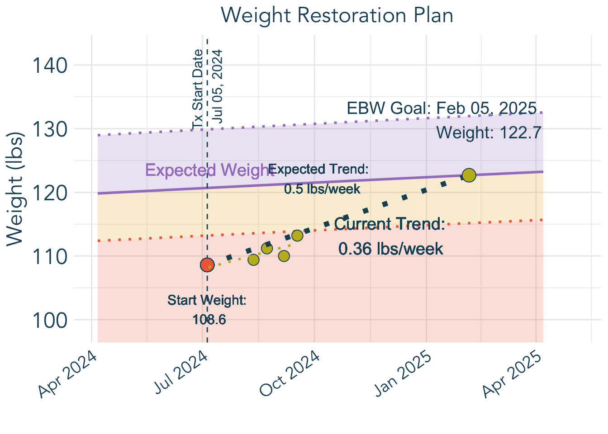
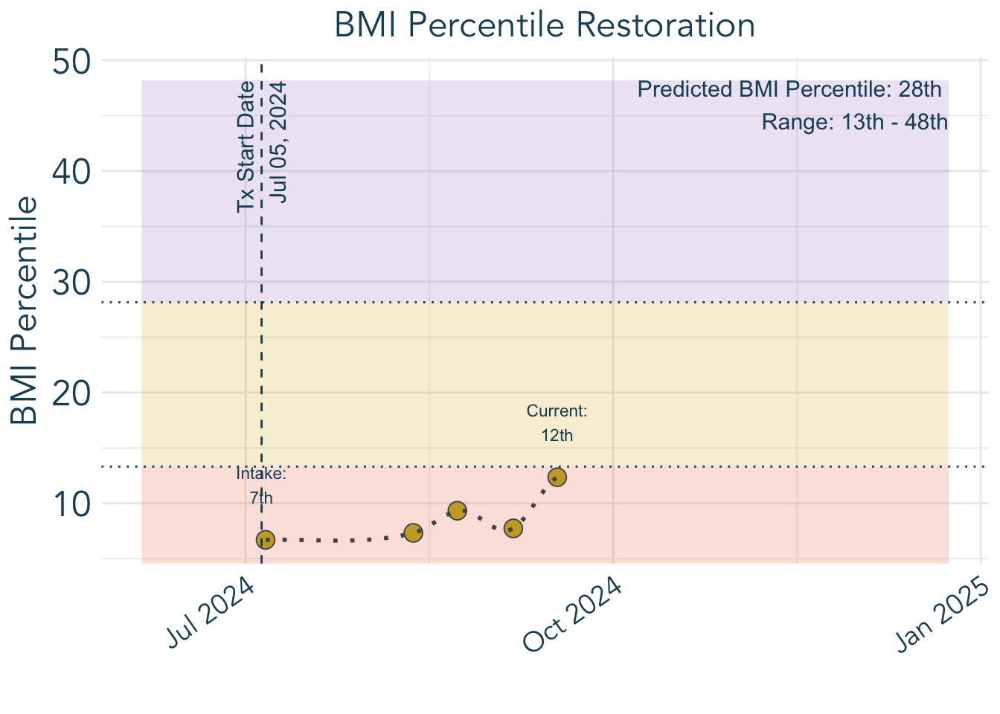
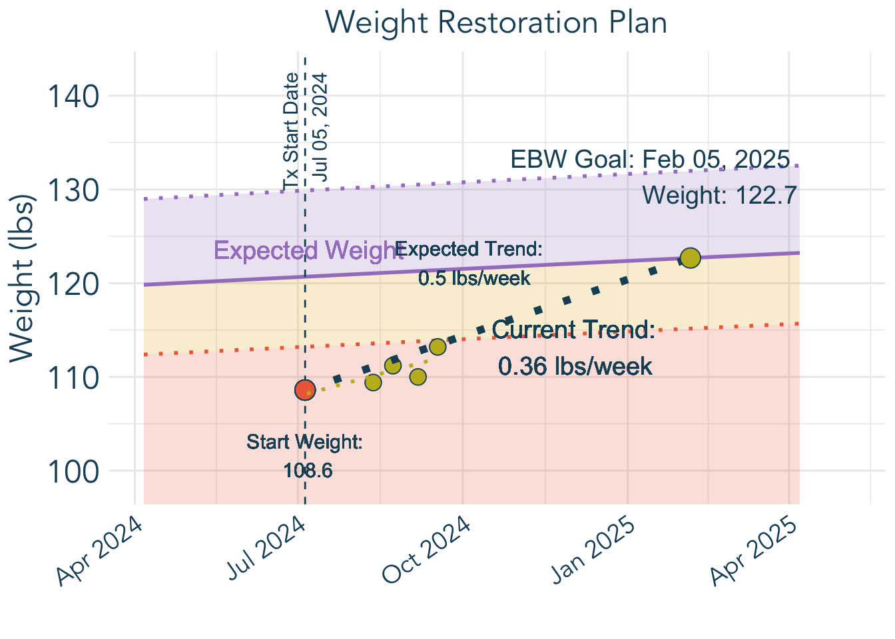
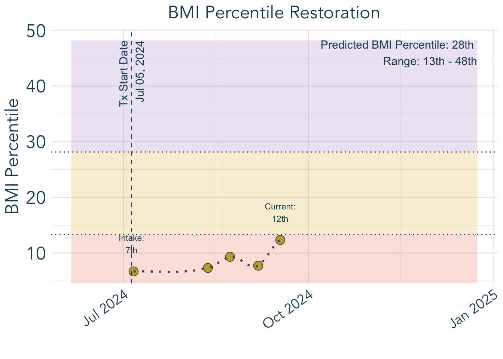
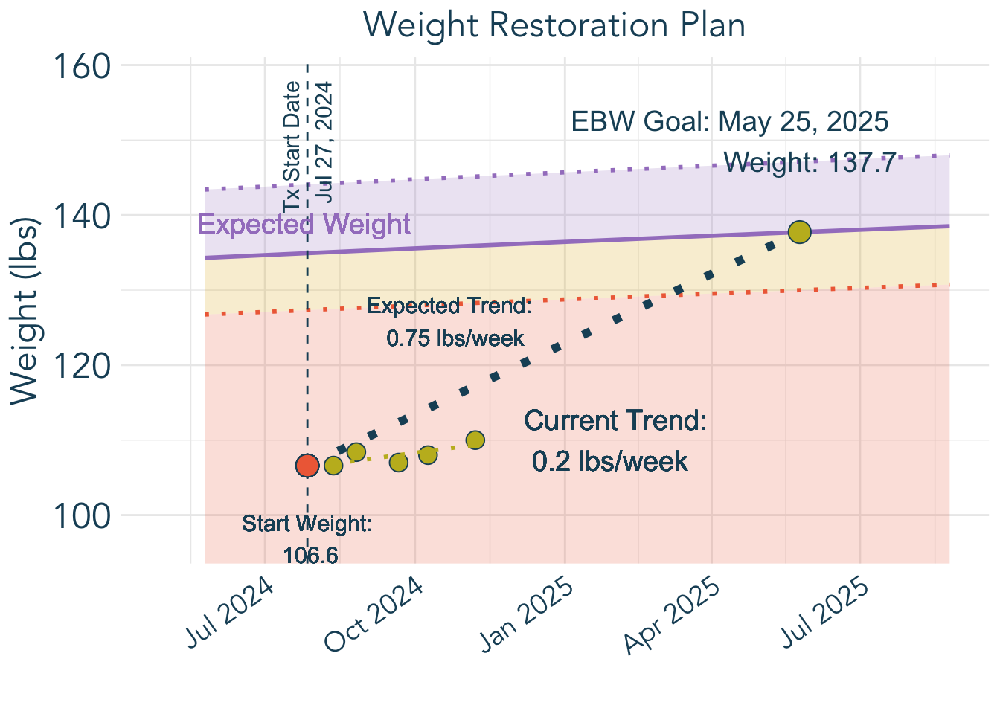
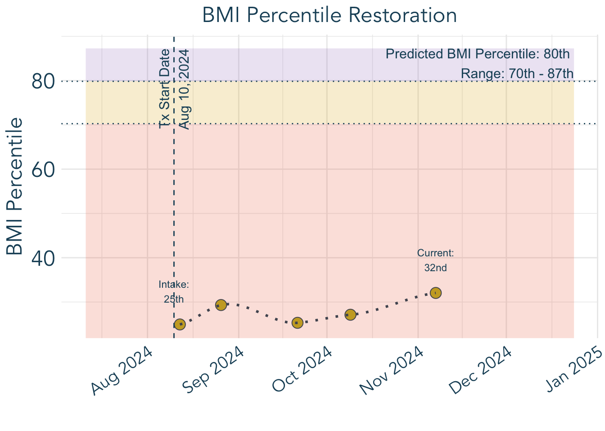

Forecast data after processing:
# A tibble: 6 × 24
agemos adult_height_in median_bmi UW_cutoff_bmi median_wt AN_cutoff_wt sex
<dbl> <dbl> <dbl> <dbl> <dbl> <dbl> <chr>
1 25 64 16.4 15.1 NaN NaN 2
2 26 64 16.3 15.1 NaN NaN 2
3 27 64 16.3 15.0 NaN NaN 2
4 28 64 16.2 15.0 NaN NaN 2
5 29 64 16.1 14.9 NaN NaN 2
6 30 64 16.1 14.9 NaN NaN 2
# ℹ 17 more variables: id <dbl>, agemos_adult_ht <dbl>, .model <chr>,
# eBMIz <dbl>, lower_eBMIz <dbl>, upper_eBMIz <dbl>, eBMI <dbl>,
# lower_eBMI <dbl>, upper_eBMI <dbl>, eWeight <dbl>, lower_eWeight <dbl>,
# upper_eWeight <dbl>, ePct <dbl>, lower_ePCT <dbl>, upper_ePCT <dbl>,
# date_assessed <date>, age_days <dbl>
Start BMI: 18.29768
Intake BMI percentile: 24.93007
Dynamic data after adding bmi and pct:
# A tibble: 6 × 8
date_assessed age_days weight_lbs weight_kgs height_in height_cm bmi pct
<date> <dbl> <dbl> <dbl> <dbl> <dbl> <dbl> <dbl>
1 2021-04-25 4383 105. 47.7 62 157. 19.2 65.6
2 2024-08-12 5588. 107. 48.4 64 163. 18.3 24.9
3 2024-08-26 5603. 108. 49.2 64 163. 18.6 29.3
4 2024-09-21 5629. 107 48.5 64 163. 18.4 25.3
5 2024-10-09 5647. 108 49.0 64 163. 18.5 27.1
6 2024-11-07 5676. 110 49.9 64 163. 18.9 32.0
Start percentile: 24.93007
Current percentile: 32.0453
Predicted BMI Percentile: 80 th
Intake Percentile: 25 th
Current Percentile: 32 nd 
| Age | Expected BMI | Expected Weight (lbs) | Expected Weight (kgs) |
|---|---|---|---|
| 15.0 | 18.4 (17.2, 19.7) | 120.7 (113.2, 129.9) | 54.8 (51.4, 58.9) |
| 15.5 | 18.6 (17.5, 20) | 122.4 (114.9, 131.7) | 55.5 (52.1, 59.7) |
| 16.0 | 18.9 (17.7, 20.3) | 124 (116.5, 133.4) | 56.3 (52.8, 60.5) |
| 16.5 | 19.1 (17.9, 20.5) | 125.5 (117.9, 134.9) | 56.9 (53.5, 61.2) |
| 17.0 | 19.3 (18.1, 20.7) | 126.9 (119.3, 136.4) | 57.6 (54.1, 61.9) |
| 17.5 | 19.5 (18.3, 20.9) | 128.2 (120.6, 137.7) | 58.1 (54.7, 62.4) |
| 18.0 | 19.7 (18.5, 21.1) | 129.3 (121.6, 138.8) | 58.6 (55.2, 63) |
| 18.5 | 19.8 (18.6, 21.3) | 130.2 (122.5, 139.8) | 59.1 (55.6, 63.4) |
| 19.0 | 19.9 (18.7, 21.4) | 131 (123.2, 140.7) | 59.4 (55.9, 63.8) |
| 19.5 | 20 (18.8, 21.5) | 131.5 (123.6, 141.3) | 59.6 (56.1, 64.1) |
| 20.0 | 20 (18.8, 21.6) | 131.8 (123.8, 141.8) | 59.8 (56.2, 64.3) |
| 20.5 | 20 (18.8, 21.6) | 131.8 (123.8, 141.9) | 59.8 (56.2, 64.4) |
| 21.0 | 20 (18.8, 21.6) | 131.8 (123.8, 141.9) | 59.8 (56.2, 64.4) |
| 21.5 | 20 (18.8, 21.6) | 131.8 (123.8, 141.9) | 59.8 (56.2, 64.4) |
| 22.0 | 20 (18.8, 21.6) | 131.8 (123.8, 141.9) | 59.8 (56.2, 64.4) |
| 22.5 | 20 (18.8, 21.6) | 131.8 (123.8, 141.9) | 59.8 (56.2, 64.4) |
| 23.0 | 20 (18.8, 21.6) | 131.8 (123.8, 141.9) | 59.8 (56.2, 64.4) |
| 23.5 | 20 (18.8, 21.6) | 131.8 (123.8, 141.9) | 59.8 (56.2, 64.4) |
| 24.0 | 20 (18.8, 21.6) | 131.8 (123.8, 141.9) | 59.8 (56.2, 64.4) |
| 24.5 | 20 (18.8, 21.6) | 131.8 (123.8, 141.9) | 59.8 (56.2, 64.4) |
| Age | Expected BMI | Expected Weight (lbs) | Expected Weight (kgs) |
|---|---|---|---|
| 12.0 | 20.8 (19.7, 22.2) | NA (NA, NA) | NA (NA, NA) |
| 12.5 | 21.2 (20, 22.6) | NA (NA, NA) | NA (NA, NA) |
| 13.0 | 21.6 (20.4, 23) | NA (NA, NA) | NA (NA, NA) |
| 13.5 | 22 (20.7, 23.4) | NA (NA, NA) | NA (NA, NA) |
| 14.0 | 22.3 (21.1, 23.8) | NA (NA, NA) | NA (NA, NA) |
| 14.5 | 22.7 (21.4, 24.2) | NA (NA, NA) | NA (NA, NA) |
| 15.0 | 23 (21.7, 24.6) | NA (NA, NA) | NA (NA, NA) |
| 15.5 | 23.3 (22, 24.9) | 135.8 (128.1, 145) | 61.6 (58.1, 65.8) |
| 16.0 | 23.6 (22.3, 25.2) | 137.5 (129.7, 146.8) | 62.4 (58.8, 66.6) |
| 16.5 | 23.9 (22.5, 25.5) | 139 (131.2, 148.5) | 63.1 (59.5, 67.4) |
| 17.0 | 24.1 (22.8, 25.8) | 140.5 (132.6, 150.1) | 63.7 (60.1, 68.1) |
| 17.5 | 24.3 (23, 26) | 141.8 (133.8, 151.6) | 64.3 (60.7, 68.8) |
| 18.0 | 24.6 (23.2, 26.3) | 143.1 (135, 153) | 64.9 (61.2, 69.4) |
| 18.5 | 24.8 (23.3, 26.5) | 144.2 (136, 154.4) | 65.4 (61.7, 70) |
| 19.0 | 24.9 (23.5, 26.7) | 145.3 (136.9, 155.7) | 65.9 (62.1, 70.6) |
| 19.5 | 25.1 (23.6, 26.9) | 146.3 (137.7, 157) | 66.4 (62.5, 71.2) |
| 20.0 | 25.3 (23.8, 27.2) | 147.2 (138.5, 158.2) | 66.8 (62.8, 71.8) |
| 20.5 | 25.3 (23.8, 27.2) | 147.4 (138.6, 158.4) | 66.9 (62.8, 71.9) |
| 21.0 | 25.3 (23.8, 27.2) | 147.4 (138.6, 158.4) | 66.9 (62.8, 71.9) |
| 21.5 | 25.3 (23.8, 27.2) | 147.4 (138.6, 158.4) | 66.9 (62.8, 71.9) |
Growth Chart Reference Sex: Female
Central BMIz Point: Mean
Prediction Interval: 95%
Eating Disorder Age of Onset: 14.8 years
Adult Height: 68 in / 173 cm
Age at Adult Height: 14.0 years
Most Recent Age with Available Data: 15.2 years
Most Recent Height: 68 in / 172.7 cm
Most Recent Weight: 111.5 lbs / 50.6 kg
Most Recent BMI: 16.9
Most Recent BMI Percentile: 9.7
Expected BMI Percentile: 28.1 (13.3, 48.2)
Expected BMI (+1 Year): 18.9 (17.8, 20.4)
Expected Weight (+1 Year): 124.5 (117, 133.9) lbs / 56.5 (53.1, 60.7) kg
Expected BMI (+5 Years): 20 (18.8, 21.6)
Expected Weight (+5 Years): 131.8 (123.8, 141.9) lbs / 59.8 (56.2, 64.4) kg
Growth Chart Reference Sex: Female
Central BMIz Point: Mean
Prediction Interval: 95%
Eating Disorder Age of Onset: 11.8 years
Adult Height: 64 in / 163 cm
Age at Adult Height: 15.3 years
Most Recent Age with Available Data: 15.5 years
Most Recent Height: 64 in / 162.6 cm
Most Recent Weight: 109 lbs / 49.4 kg
Most Recent BMI: 18.7
Most Recent BMI Percentile: 29.5
Expected BMI Percentile: 79.8 (70.3, 87.3)
Expected BMI (+1 Year): 23.9 (22.5, 25.5)
Expected Weight (+1 Year): 139 (131.2, 148.5) lbs / 63.1 (59.5, 67.4) kg
Expected BMI (+5 Years): 25.3 (23.8, 27.2)
Expected Weight (+5 Years): 147.4 (138.6, 158.4) lbs / 66.9 (62.8, 71.9) kg